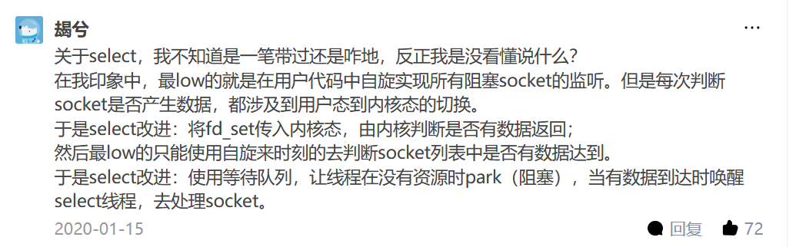

IO复用：select() poll() epoll()
结合了UNIX网络编程和一些网上的帖子，用自己的理解写了一遍，可能漏洞百出，希望大佬们发现错误不吝赐教。
并发服务器
假如说一个服务器需要处理一个比较简单的服务，但是这个服务花费的时间比较长，一个客户端占用的时候这整个服务器就被占用了，这样显然是低效的，我们希望我们的服务器能够同时服务于多个客户，这也就是我们所谓的并发服务器。所以为了处理多个客户的请求，我们首先有一个比较简单的实现方法，也就是让我们的程序fork()出自己的子进程，让连接了客户端的子进程去处理客户端的请求，父进程则关闭与客户端的连接，转而监听下一个连接请求。因为这不是这里讲的重点，就直接略过了。
select()
显然上面所说的方法需要维护很多个子进程，并且很多的线程必然会导致系统有很大的开销，于是我们设计了**epoll()**这样一个IO复用。
与多进程和多线程技术相比，I/O多路复用技术的最大优势是系统开销小，系统不必创建进程/线程。
也就是说这个技术使得我们可以用一个进程去监听多个文件描述符fd。
1 | int select (int n, fd_set *readfds, fd_set *writefds, fd_set *exceptfds, struct timeval *timeout); |
select有点蠢
**fd_set()**是所有需要监听的文件描述符
相应的write,read,except就是字面意思，我们需要处理的读，写和期望的错误。
发生这些事件的时候select会被唤醒去执行接下来的操作，如果这些事件都没有发生那么select就会沉睡。
select采用的是轮询的检查方式，灰常之慢
而且select所监听的文件描述符的数量是有上限的，一般给的宏定义是1024

截一个大佬的解释
poll()
poll()和select()几乎没有什么区别，只是poll()使用了pollfd结构而不是select的fd_set结构，使得poll支持的fds集合限制远大于select的1024。poll虽然解决了fds集合大小1024的限制问题，从实现来看。很明显它并没优化大量描述符数组被整体复制于用户态和内核态的地址空间之间，以及个别描述符就绪触发整体描述符集合的遍历的低效问题。poll随着监控的socket集合的增加性能线性下降，使得poll也并不适合用于大并发场景。深入浅出理解select、poll、epoll的实现 - 知乎 (zhihu.com)
poll()不是我们研究的重点，也就一笔带过了。
epoll()
这个是研究的重点，在poll()之上进行了优化。
之前以为epoll是一个封装好的函数，其实这个接口由三个函数组成：
int epoll_create(int size);
这其中的size在老版本的Linux中是epoll需要监听的文件描述符的数量，以便于系统分配空间，但是在现在的版本中这个size是没有用的，系统会动态的分配空间，但是为了向下兼容，一般用一个>0的值来充当size，epoll_create在返回值<0时表示出错。
这个函数的功能是创建了一个epoll实例供下面的函数去调用，这也有自己的文件描述符，所以最后需要close不然文件描述符会不够。
int epoll_ctl(int epfd, int op, int fd, struct epoll_event *event);
- **功能：**epoll 的事件注册函数，它不同于 select() 是在监听事件时告诉内核要监听什么类型的事件，而是在这里先注册要监听的事件类型。
- 参数epfd: epoll 专用的文件描述符，epoll_create()的返回值
- 参数op: 表示动作，用三个宏来表示：
- EPOLL_CTL_ADD：注册新的 fd 到 epfd 中；
- EPOLL_CTL_MOD：修改已经注册的fd的监听事件；
- EPOLL_CTL_DEL：从 epfd 中删除一个 fd；
- 参数fd: 需要监听的文件描述符
- 参数event: 告诉内核要监听什么事件，struct epoll_event 结构如:
- events****可以是以下几个宏的集合：
- EPOLLIN ：表示对应的文件描述符可以读（包括对端 SOCKET 正常关闭）；
- EPOLLOUT：表示对应的文件描述符可以写；
- EPOLLPRI：表示对应的文件描述符有紧急的数据可读（这里应该表示有带外数据到来）；
- EPOLLERR：表示对应的文件描述符发生错误；
- EPOLLHUP：表示对应的文件描述符被挂断；
- EPOLLET ：将 EPOLL 设为边缘触发(Edge Trigger)模式，这是相对于水平触发(Level Trigger)来说的。
- EPOLLONESHOT：只监听一次事件，当监听完这次事件之后，如果还需要继续监听这个 socket 的话，需要再次把这个 socket 加入到 EPOLL 队列里
- **返回值：**0表示成功，-1表示失败。
int epoll_wait (int epfd, struct epoll_event * * events, int maxevents, int timeout);
- **功能：**等待事件的产生，收集在 epoll 监控的事件中已经发送的事件，类似于 select() 调用。
- 参数epfd: epoll 专用的文件描述符，epoll_create()的返回值
- 参数events: 分配好的 epoll_event 结构体数组，epoll 将会把发生的事件赋值到events 数组中（events 不可以是空指针，内核只负责把数据复制到这个 events 数组中，不会去帮助我们在用户态中分配内存）。
- 参数maxevents: maxevents 告之内核这个 events 有多少个 。
- 参数timeout: 超时时间，单位为毫秒，为 -1 时，函数为阻塞。
- 返回值：
- 如果成功，表示返回需要处理的事件数目
- 如果返回0，表示已超时
- 如果返回-1，表示失败
如果您喜欢此博客或发现它对您有用，则欢迎对此发表评论。 也欢迎您共享此博客，以便更多人可以参与。 如果博客中使用的图像侵犯了您的版权，请与作者联系以将其删除。 谢谢 ！